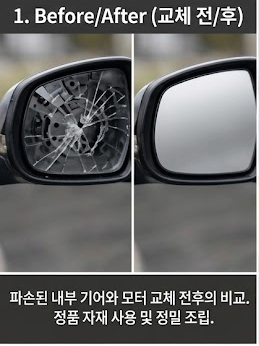
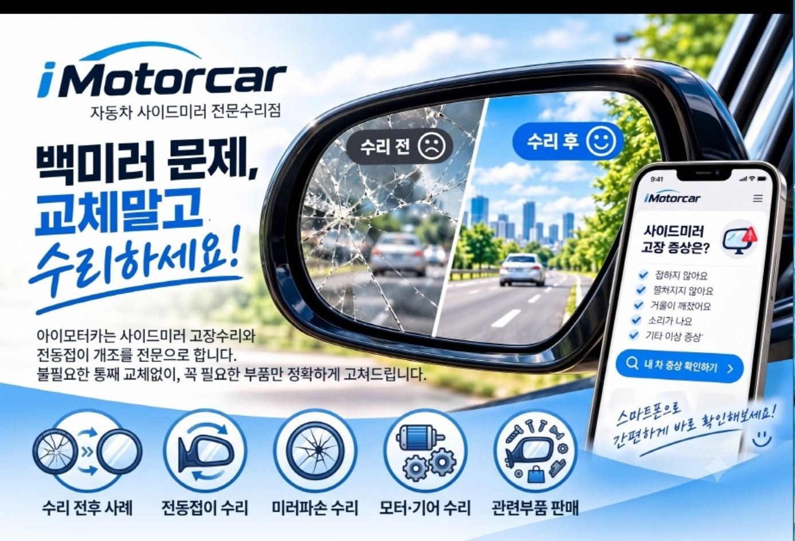
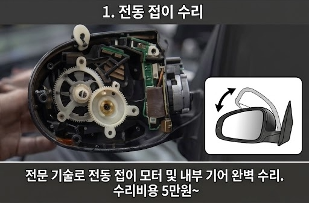
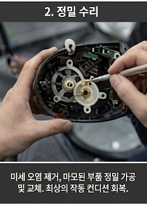
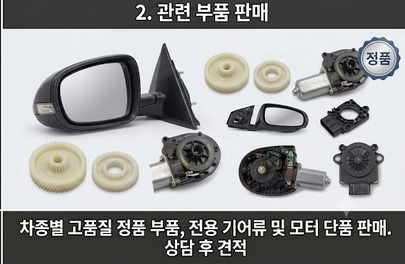
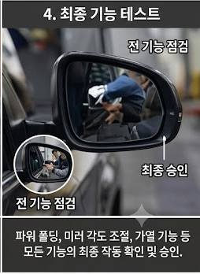
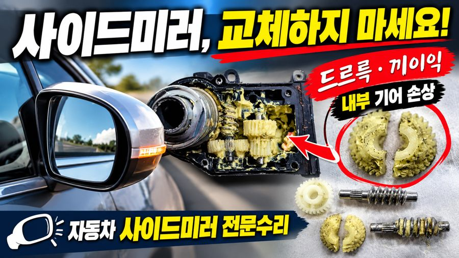

Before / After
파손된 내부 기어·모터 교체 전후 비교

사이드미러 증상별로 필요한 수리만 진행합니다. 실제 수리 전후 사진은 자료실에서 확인하실 수 있습니다.

파손된 내부 기어·모터 교체 전후 비교

전동 접이 모터 및 내부 기어 완벽 수리
유리 파손 · 균열 복원

마모된 부품 정밀 가공 및 교체

차종별 정품 부품·전용 기어류·모터 단품

증상 상담 및 예약 접수
전문 장비로 원인 파악
숙련된 기술로 정확히 수리
작동 테스트 및 품질 검검
수리 후 안심 케어
유튜브 영상이나 차량 지식이 있으신 분들이 "이 정도는 쉽게 할 수 있겠다"고 생각하시는 작업도, 막상 실제 차량 앞에서는 영상과 전혀 다른 상황이 펼쳐지는 경우가 많습니다.
일반 공구가 아닌 해당 차종 전용 공구가 반드시 필요한 작업도 있으며, 무리하게 진행하시면 오히려 미러 손상이나 안전 문제로 이어질 수 있습니다.
사이드미러 고장수리는 전문가에게 맡기시는 것을 권장드립니다. 정확한 진단과 안전한 정비, 그 결과에 대한 책임까지 아이모터카가 함께하겠습니다.
차종·작업일자·증상별로 정리한 실제 수리 기록입니다.
아이모터카 유튜브 채널에서 실제 작업 과정을 공개하고 있습니다. 아래 영상을 눌러 확인해 보세요.

드르륵·끼익 소음의 원인 — 내부 기어 손상 진단
파손 유리만 교체하는 방법
노후 차량 편의사양 업그레이드
대부분 모터나 기어 마모가 원인이며, 어셈블리 전체를 교체하지 않고 해당 부품만 수리해도 정상 작동이 가능한 경우가 많습니다. 증상을 사진이나 영상으로 보내주시면 우선 진단해 드립니다.
네, 수동(Non-Foldable) 사이드미러를 전동접이(Power Folding) 방식으로 개조하는 작업을 전문으로 하고 있습니다. 차종에 따라 가능 여부와 비용이 달라 상담 후 안내해 드립니다.
네, 하우징 전체가 아닌 파손된 유리만 재단·복원하여 교체하는 것이 가능합니다. 교체 대비 비용을 크게 줄일 수 있습니다.
모든 수리 건에 대해 A/S 보증 기간을 제공하며, 기간 내 동일 증상 재발 시 무상으로 재점검해 드립니다.